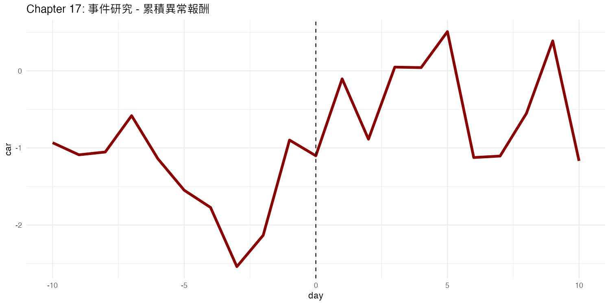

R VIBE CODING
17. 事件研究與情緒分析
事件研究方法
事件研究（Event Study）是金融領域經典方法，用來分析特定事件對股價的影響：
事件前後的異常報酬（Abnormal Return）
累積異常報酬（CAR）
情緒指標與股價的關係
R 實際輸出
事件前後累積異常報酬曲線：

常見錯誤
1. 事件日期定義不清
公告日 vs 事件日容易混淆，需明確定義。
2. 忽略市場模式
必須扣除大盤影響，否則無法判斷是否為異常。
R 程式碼下載
下載 chapter17_code.R